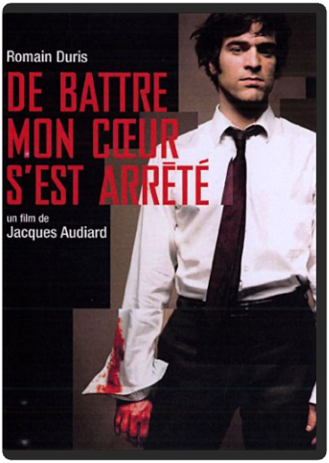

Bienvenue au club ! Wim Wenders nous offre là un véritable bain de jouvence musical et cinématographique en nous entraînant à La Havane, à la découverte de ces fameux musiciens cubains légendaires, les "Super Abuelos" d'environ 90 ans. L'initiateur du projet, c'est le guitariste Ry Cooder (compositeur de Paris Texas, du même Wenders) parti en 1996 à la recherche des vieilles gloires de la musique cubaine. Enthousiasmé par l'aventure, le réalisateur l'accompagne lors d'un second voyage.  On retrouve Xavier avec Wendy, Isabelle et Martine quinze ans après l'Auberge Espagnole et dix ans après les Poupées Russes. Tout paraissait si simple alors mais la vie de Xavier ne cessera de prendre des détours inattendus entre Paris et New-York.  Chaos est sans aucun doute le meilleur film de Coline Serreau. L'histoire, très humaine, brasse une multitude de thèmes et tourne autour de la résurrection. Celle de Malika, une jeune prostituée, tabassée à mort par des proxénètes, et qui tombe dans le coma ; celle d'Hélène qui, accompagnée de son mari Paul, a assisté à ce spectacle sans ciller, et qui va tout mettre en œuvre pour remettre Malika sur pieds. Entourée d'acteurs formidables tels que Catherine Frot, Vincent Lindon, Line Renaud et la très talentueuse Rachida Brakni (césar du meilleur espoir féminin 2002), Coline Serreau étale au grand jour des sujets très forts comme la prostitution, le sort des femmes dans la communauté maghrébine, et l'absence d'humanité qui s'installe dans le monde. Elle réussit une œuvre intense et toujours juste, accompagnée d'une musique qui colle parfaitement aux images, celle de St Germain. Non dénué d'humour, Chaos est un film qui brille par son sujet, son interprétation et sa mise en scène. Que demander de mieux ! —Marc Maesen  Réalisation du génial créateur d'univers Tim Burton, adaptation d'un chef-d'œuvre de la littérature enfantine signé Roald Dahl, rôle-titre tenu par le talentueux caméléon Johnny Depp, il aurait fallu un énorme malentendu pour que le résultat soit raté. Burton s’intéresse encore à un personnage marginal qui, refusant le monde tel qu'il est, l’enrichit de sa propre imagination. L’alchimie Burton/Dahl contribue à faire un paysage d’une richesse visuelle époustouflante, soutenue par la musique de Danny Elfman et l’ahurissant talent de Johnny Depp. Drôle, fascinant, fantastique, émouvant, Tim Burton semble avoir trouvé le parfait équilibre entre sa vision décalée du monde et l’humanité qui sous-tend chacun de ses films. À l’image d’un film visuellement garni, cette édition souhaite proposer une interactivité à la fois exhaustive et ludique. Les menus très réussis ouvrent sur de nombreux suppléments revenant sur le tournage (l’attaque des écureuils, la création des Oompa-Loompa, les décors…). La meilleure surprise reste la partie consacrée aux jeux : le DVD propose en effet des activités ludiques, distrayantes et intelligentes. Suffisamment rare pour être souligné… www.ecranlarge.com | close : entre adultes consentantsmike nichols Bien que centré sur le sexe et la manipulation dans les rapports amoureux, le nouveau Mike Nichols reste visuellement sage, privilégiant le texte à l’image. Il signe dès lors un film plus en substance qu’en style et bouscule les esprits en s’appuyant sur des dialogues crus, directs et rarement placés dans la bouche de stars hollywoodiennes. Un portrait acerbe et très pessimiste de la gent masculine (tour à tour manipulateurs, cyniques, lâches…) servi par des acteurs inspirés - Natalie Portman et Clive Owen en tête -, qui évite la mièvrerie pour nous plonger dans un univers de cruauté et de noirceur.  B00069V4R8  Le héros des bandes dessinées de Hugo Pratt se devait de connaître une adaptation au cinéma digne de sa légende et de l'attente de ses nombreux fans. Et c'est ce qu'a réussi le réalisateur Pascal Morelli avec La Cour secrète des Arcanes, film d'animation dont le cinéma français a tout lieu d'être fier. Le train de l'amiral Kolchak transporte l'or du gouvernement contre-révolutionnaire et attire toutes les convoitises dont celle des Lanternes Rouges et de Corto Maltese qui les aide dans cette chasse au trésor. L'animation fluide, les magnifiques couleurs et le rythme lancinant de l'intrigue rendent un parfait hommage à l'œuvre du dessinateur. Pascal Morelli colle parfaitement au mythique personnage qu'est devenu au fil des ans, Corto Maltese et n'oublie pas de dépeindre brillamment des personnages secondaires marquants comme son comparse Raspoutine, une duchesse russe (dangereuse femme fatale) et un aviateur américain. Outre des scènes d'action parfaitement orchestrées et des paysages magnifiés par une réalisation se reposant sur un travail de superposition (images réelles combinées à l'animation), Corto Maltese bénéficie d'un doublage soigneux apporté par des acteurs tels que Richard Berry, pour le rôle titre, Patrick Bouchitey (Raspoutine) et Marie Trintignant (la duchesse). Une œuvre de grande qualité. —Marc Maesen  Costner reçut un beau paquet d'oscars pour ce film émouvant et captivant de 1990 retraçant l'histoire d'un soldat blanc en poste d'éclaireur solitaire dans le Dakota des années 1870 et qui se lie d'amitié avec les communautés de Sioux avoisinantes. Danse avec les loups n'est peut-être pas un chef-d'oeuvre, mais il vaut bien mieux que la somme de ses bonnes intentions. Les personnages sont puissants, le développement de l'amitié est à la fois ambitieux et délicat, et l'idylle entre le héros et le personnage de Mary McDonnell est très touchante. Et, bien que la troisième partie qui traite de la venue d'une colonie de mormons semble superflue, Costner réussit malgré tout à nous conduire vers une conclusion terriblement émouvante. La direction est assurée, l'équilibre entre l'action et l'intimité est parfait. Que demander de plus à un film ? —Tom Keogh  de battre, mon coeur s'est arrêtéjacques audiard Dans la famille Audiard, demandez le fils, réalisateur talentueux qui s’illustre dans des films aussi noirs que brillants. Un vernis qui recouvre des faux semblants, à l’image de Tom dont la complicité avec son père escroc dissimule son vrai désir intérieur : devenir un grand pianiste. À mesure que Tom va laisser la musique pénétrer son cœur, il va peu à peu s’éloigner de celui de son père. Au centre de ces parcours difficiles mais humainement prenants, de ce petit jeu entre doigté délicat et coups de poings et de gueule, Romain Duris insuffle avec une rare justesse la vie au Tom imaginé par le chef d’orchestre Audiard, réalisateur maestro. |

Julien
Collection Total:
1 866 Items
1 866 Items
Last Updated:
Feb 24, 2021
Feb 24, 2021


 Made with Delicious Library
Made with Delicious Library